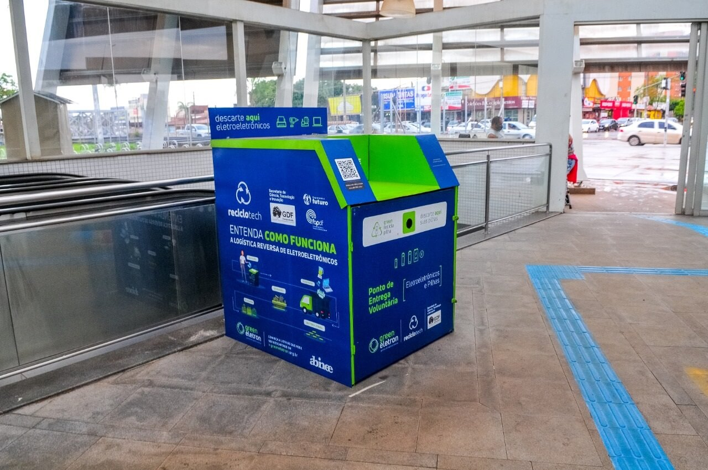

Quem Somos
A GreenMed é uma empresa comprometida em promover o descarte consciente de medicamentos. Nossa missão é garantir que produtos vencidos ou não utilizados sejam descartados corretamente, contribuindo para a saúde pública e a preservação do meio ambiente.
Trabalhamos ao lado de farmácias parceiras e disponibilizamos estações de coleta em diversos pontos. Com tecnologia e responsabilidade, ajudamos a reduzir os impactos ambientais e promover uma sociedade mais sustentável.
